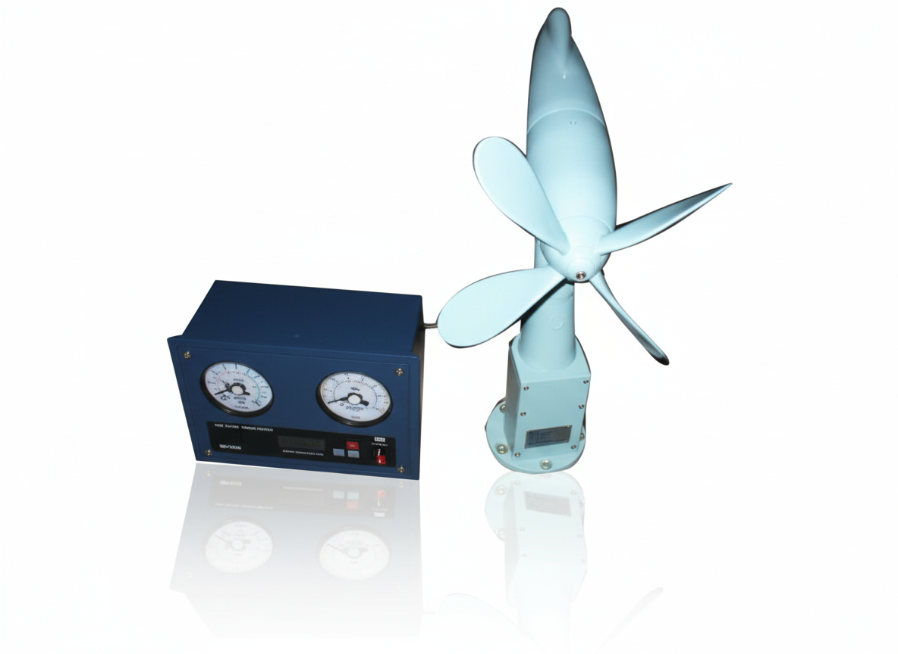
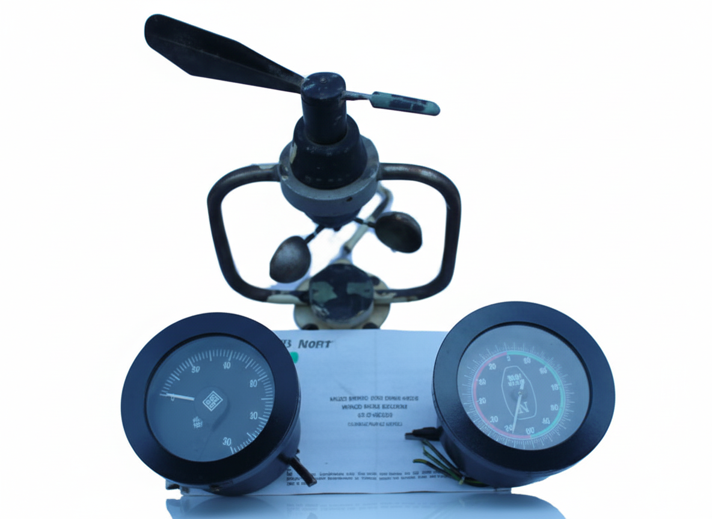
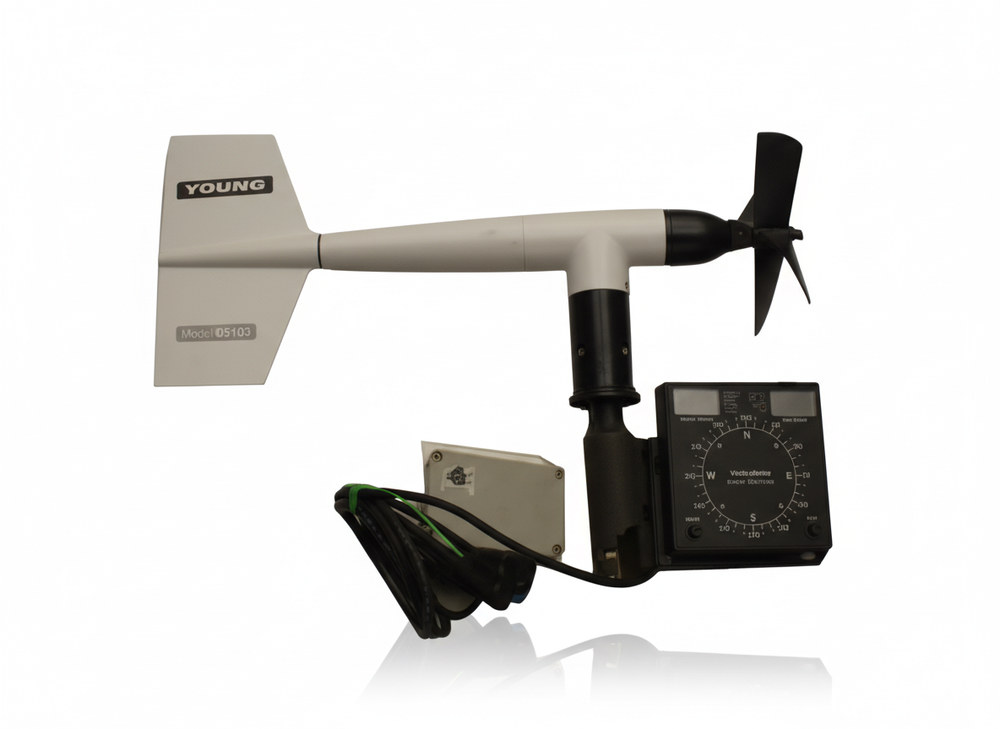

About Our Anemometer Equipment
Professional anemometer equipment for accurate wind measurement and weather monitoring in marine environments. Our anemometers provide reliable wind speed and direction data essential for navigation, safety, and operational efficiency. Built to withstand harsh marine conditions with precision engineering and durable construction.

Daeyang Anemometer
High-precision wind measurement instrument for marine applications

Hensine Anemometer
Reliable wind speed and direction measurement for marine vessels

Nippon Anemometer
Advanced Japanese technology for accurate wind monitoring

Osaka Nunotani Anemometer
Professional-grade anemometer for marine weather monitoring

Sperry Anemometer
Trusted Sperry technology for marine wind measurement systems

Young Anemometer
High-quality wind measurement equipment for marine applications
Why Choose Our Anemometer Equipment?
Accurate Measurement
Precision wind speed and direction measurement with high accuracy and reliability
Marine Grade
Built to withstand harsh marine environments with corrosion-resistant materials
Real-time Data
Continuous wind monitoring with real-time data transmission and logging
Safety & Navigation
Essential for marine safety, navigation, and weather monitoring operations
Sunrise Marine is your trusted partner for high-quality marine equipment and solutions. With over 25 years of experience, we provide comprehensive marine equipment solutions worldwide.
Our Products
Contact Us
- Email: info@sunrise-marine.com
- Phone: +91 278 2560837
- Bhavnagar, India
- Send Enquiry
- Technical Support
Copyright © All rights reserved | Sunrise Marine